Les Armoiries Royales & Titulature du Souverain
Grand Blason du Royaume de Novarcis
Blasonnement : « Écartelé : aux 1 et 4 d'azur à trois fleurs de lys d'or (de France) ; aux 2 et 3 d'or à l'aigle éployée de sable, becquée et membrée de gules (de Rovère). L'écu timbré du casque royal, entouré des colliers des grands ordres et soutenu par deux anges armés tenant piques et boucliers. Le tout sommé du manteau pourpre royal doublé d'hermine et surmonté de la couronne royale de Novarcis. »
Le Grand Blason incarne l'alliance sacrée entre la terre historique de Rovère et l'héritage d'Ancien Régime apporté par la branche de Bourbon. Le manteau pourpre et la devise dynastique « Fortitudo et Hereditas » (Force et Héritage) rappellent le devoir de protection du Souverain envers le peuple novarcien.
Titulature Officielle de Sa Majesté
« Sa Majesté James Ier, Par la grâce de Dieu, Roi de Novarcis, Roi de Brundberg, Roi d'Autriche, Roi de Hongrie, Duc de Rovère, Prince Royal de France, Grand Commandeur des ordres du Saint-Esprit, de Saint-Michel, de la Couronne de Novarcis, du Mérite de Novarcis et de Saint-Léandre, protecteur des Lys. »
Le Rôle de la Monarchie Constitutionnelle
Le Royaume de Novarcis est une monarchie héréditaire, constitutionnelle et parlementaire de droit divin. Garant de l'unité nationale et de la Constitution promulguée le 12 mars 1962, le Roi exerce un rôle d'arbitrage impartial au-dessus des querelles politiques éphémères.
- Chef des Armées & Garde Royale : Commande les forces armées du Royaume en coordination avec le gouvernement.
- Sanction & Veto Royal : Sanctionne les lois du Parlement et dispose d'un droit de veto absolu sur les textes d'exception.
- Initiative des Référendums : Consultations directes du peuple novarcien sur les grandes orientations du Royaume.
- Présidence de la Chambre des Communes : Préside de manière honorifique l'assemblée élective pour garantir la dignité des débats.
- Pouvoir d'Ordonnance : Promulgue des ordonnances royales de sa propre initiative dans ses domaines de compétence.
Membres de la Famille Royale & Haute Administration
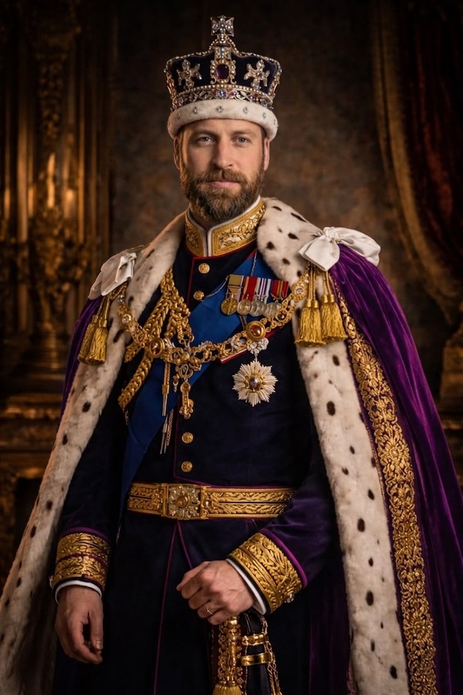
Sa Majesté le Roi James Ier
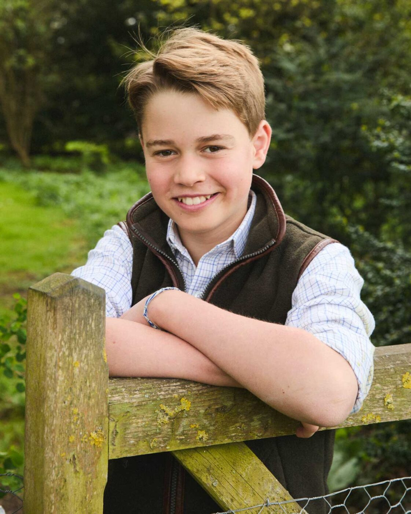
Son Altesse Royale le Prince Charles
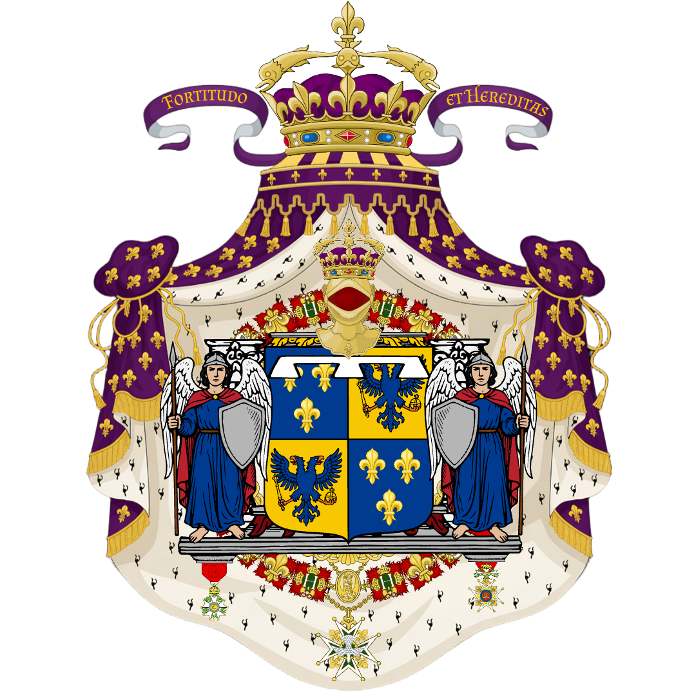
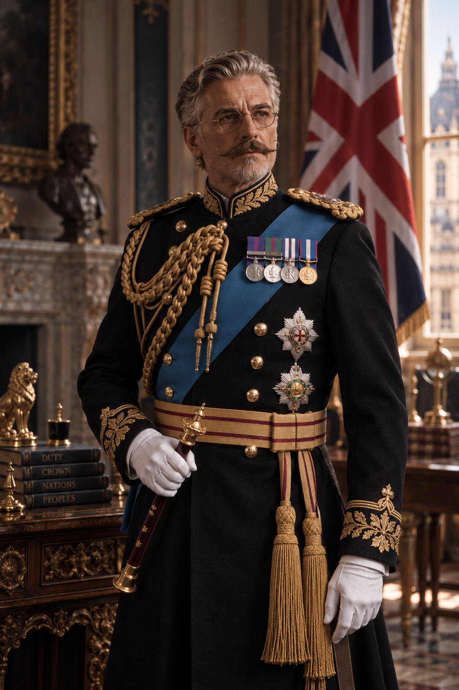
Monseigneur Alaric de Mirval
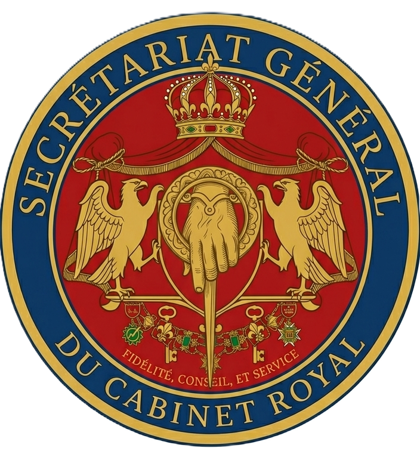
Douze Siècles d'Histoire Dynastique (800 — Nos Jours)
1. Le Duché de Rovère & Les Trois Provinces (800 — 1653)
En l'an 800, l'empereur Charlemagne confie le territoire central à Aldric Ier de Rovère. Pendant plus de huit siècles, 36 ducs bâtisseurs façonnent la région. Le territoire se structure autour de trois entités distinctes : le Duché de Rovère au centre, le Duché d'Auron à l'ouest (terres celtiques et maritimes), et le Duché de Lysange au nord (marche frontière aux racines norroises et berceau de la famille Norrington).
2. L'Unification & La Naissance du Royaume (1653)
Le 19 octobre 1653, Antoine VI de Rovère convoque les assemblées des trois duchés et proclame l'unification. 36e Duc de Rovère, il devient le 1er Roi de Novarcis. C'est sous son fils Charles V (1670-1709) que le château médiéval est sublimé en édifice Renaissance pour devenir le grand Palais de Downton.
3. L'Alliance Bourbonienne, la Régence et la Constitution de 1962
En 1930, l'alliance entre la Maison de Rovère et la Maison de Bourbon s'officialise par le mariage d'Alexandre de Bourbon et de la Princesse Éléonora de Rovère (fille unique du Roi Théophile II). De cette union naît Louise-Auguste de Bourbon-Rovère. À la mort du Roi Théophile II en 1957, la Princesse Éléonora étant décédée avant son père, la couronne reviendra de droit à son jeune petit fils né en 1957 après le décès du roi Théophile II. C'est le fils de Louise-Auguste.
Son Altesse Royale Louise-Auguste de Bourbon-Rovère assure alors une régence majeure de 17 ans (1957–1974) sous le titre de Duchesse Régente de Novarcis et promulgue la loi fondamentale du Royaume : la Constitution du 12 mars 1962. En 1956, son mariage avec Lord Eugène Norrington, comte de Dunvarn, donne naissance à la maison régnante actuelle : la Maison de Bourbon-Rovère-Norrington. Leur fils Théophile étant le roi de droit.
4. L'Époque Contemporaine
Théodore III Norrington monte sur le trône en 1957 et assure pleinement ses fonctions en 1974. Il gouverne pendant près d'un demi-siècle. Son fils, Sa Majesté James Ier, devient le 13e Roi de Novarcis et 48e Duc de Rovère le 14 mars 2021. En avril 2026, le Palais du Parlement a fait son retour solennel à Rovère-sur-Lys après 82 ans de restauration, marquant le renouveau d'un Royaume fidèle à ses racines.
Suite à la guerre qu'engage le Royaume d'Autriche et de Hongrie contre le Royaume-Uni de Novarcis en avril 2026, celui-ci est contraint de donner sa reddition sans condition au bout d'une semaine. Ces territoires sont ainsi inclus au royaume. En juin de la même année, le Royaume de Brundberg signe un accord avec Novarcis et rejoint également le pays. Suite à cela, l'Empire Britannique est proclamé de nouveau par le Roi James.
Ordres de Chevalerie & Honneurs (Cliquez sur un ordre pour voir la fiche détaillée)
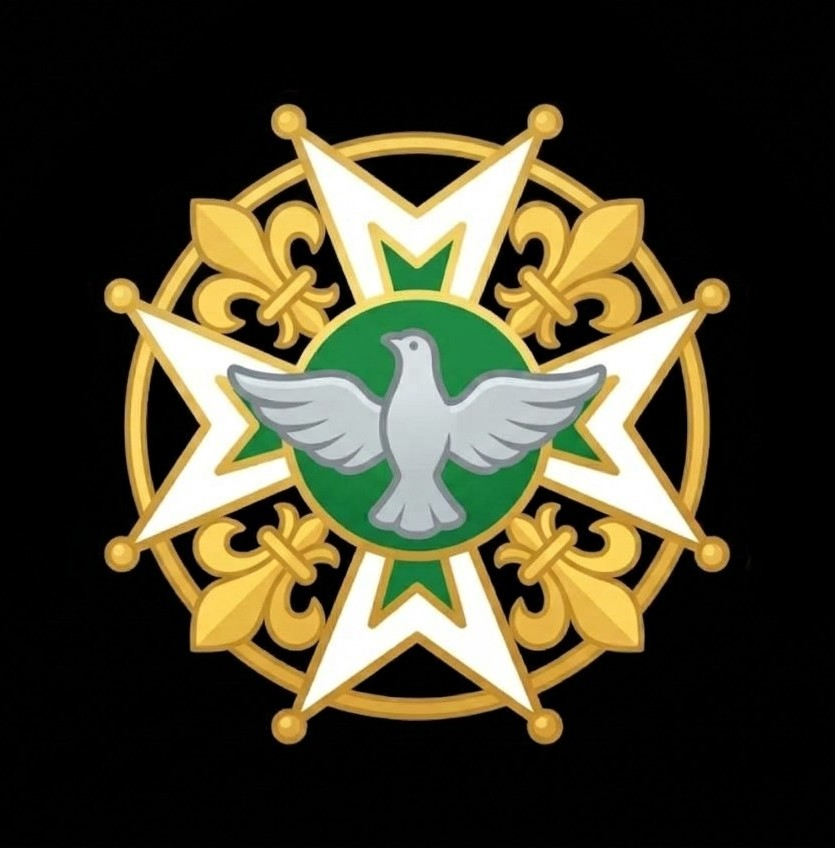
Ordre du Saint-Esprit
Premier ordre de préséance · Rang unique d'exception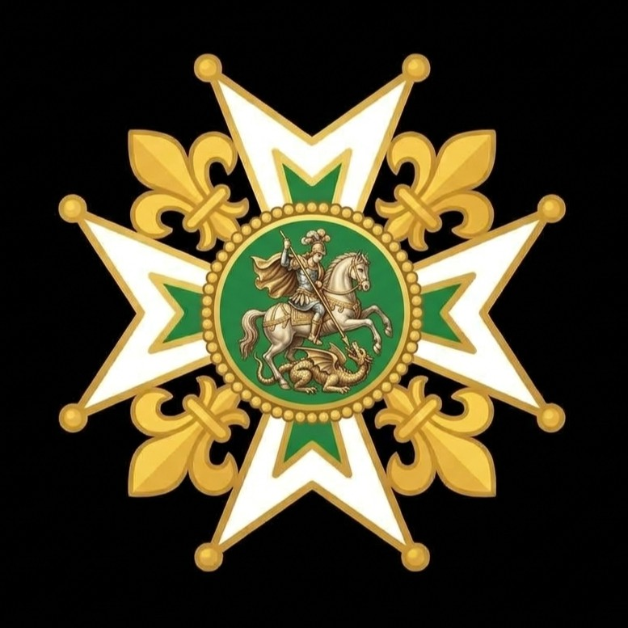
Ordre de Saint-Michel
Deuxième ordre de préséance · Voie d'anoblissement (Baron)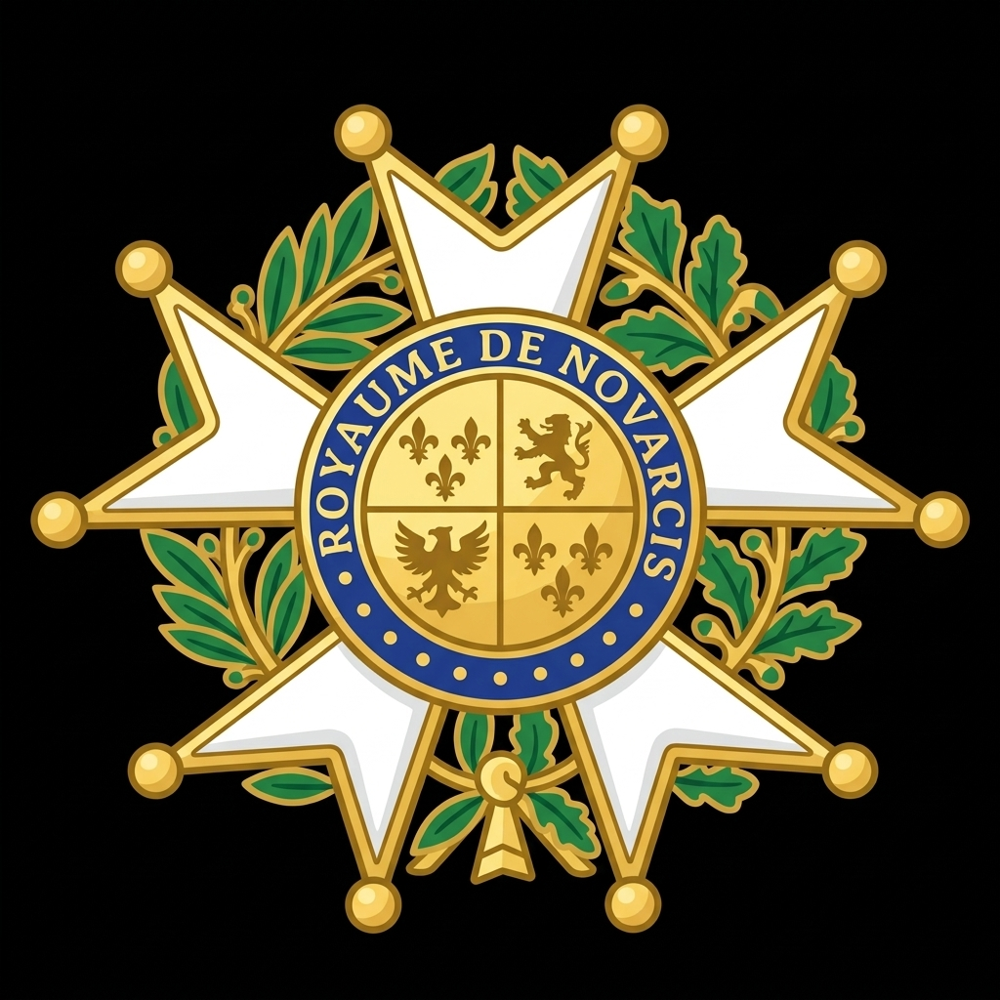
Ordre de la Couronne de Novarcis
Troisième ordre de préséance · Confère le titre de Sir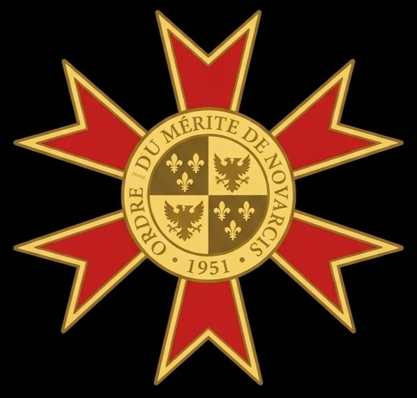
Ordre du Mérite de Novarcis
Quatrième ordre de préséance · Excellence civile & administrative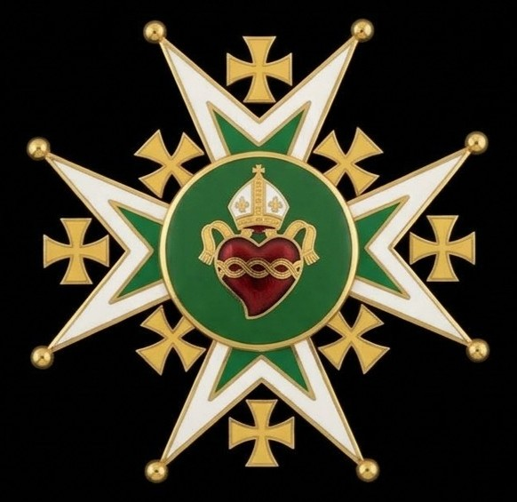
Ordre de Saint-Léandre
Cinquième ordre de préséance · Vertus morales, foi & œuvres caritativesRésidences d'État & Domaines de la Couronne (Cliquez pour agrandir & consulter le dossier)
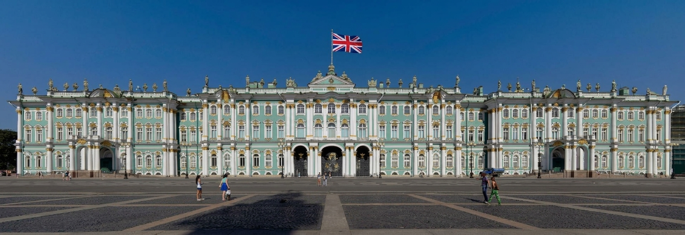
Palais Royal d'Aldricourt
📍 Rovère
Résidence de travail quotidienne du Souverain et siège de la Haute Administration.
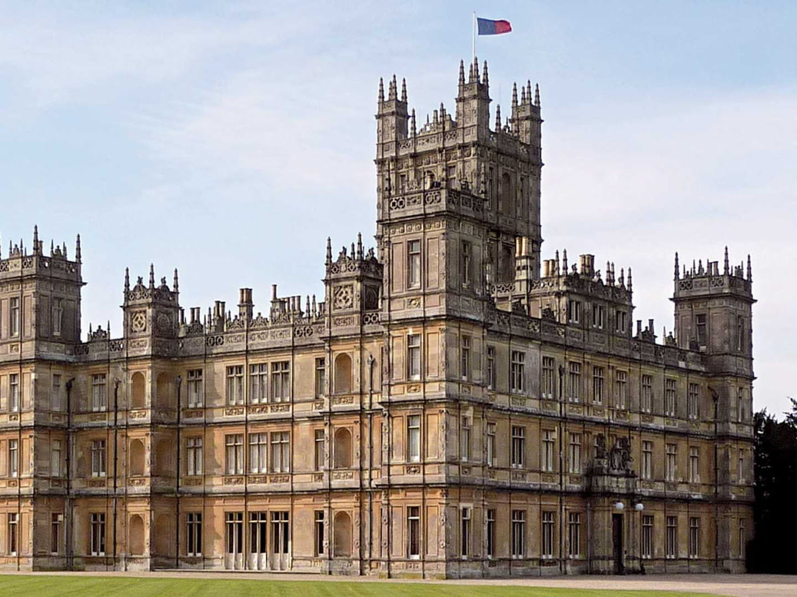
Château de Downton
📍 Rovère
Résidence officielle d'État dédiée aux sommets diplomatiques et grandes cérémonies.
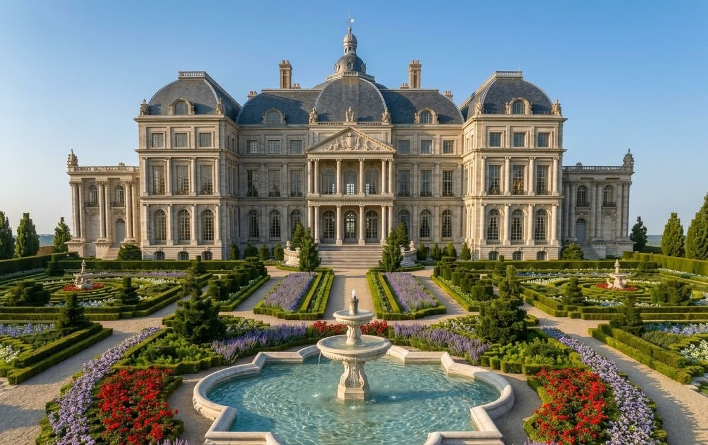
Château du Val-de-Rovère
📍 Campagne entre Rovère et Far Vegas
Merveille d'architecture classique du XVIIe siècle aux grands jardins à la française.

Manoir de Villefort
📍 Villefort
Demeure de villégiature privée de la Famille Royale pour les réceptions intimistes.
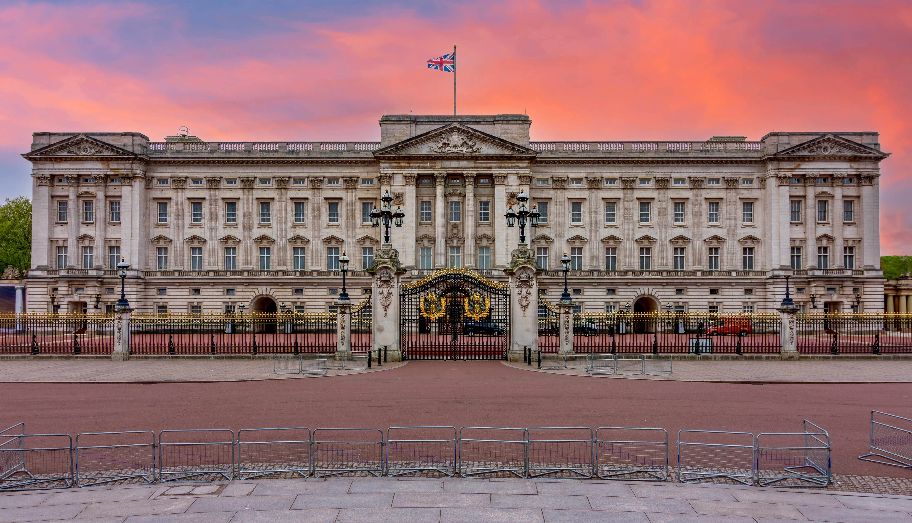
Palais de Buckingham
📍 Édimbourg (Lysange)
Palais néoclassique au cœur d'Édimbourg, résidence cérémonielle en Lysange.
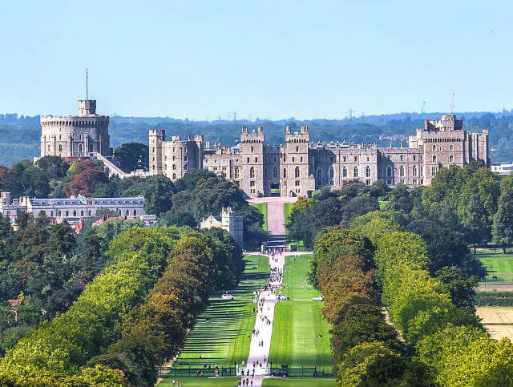
Château de Windsor
📍 Windsor (Lysange)
Forteresse historique fondée au XIe siècle, plus ancien château occupé au monde.
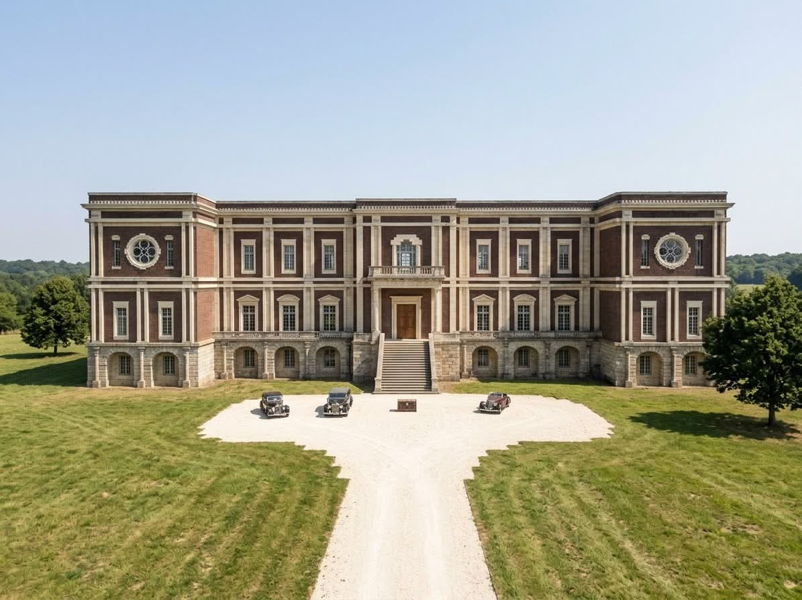
Pavillon de Chasse de Lysange
📍 Entre Édimbourg et Windsor (Lysange)
Rendez-vous de chasse et retraite hivernale au cœur des grands massifs forestiers du nord.
Gazette Royale — Actes & Ordonnances Officiels
Actes, ordonnances royales et décrets officiellement promulgués et enregistrés au Sceau du Cabinet Royal.